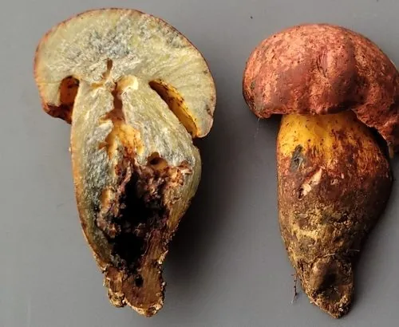

真菌 · 真菌界
兰茂牛肝菌 Lanmaoa asiatica

云南著名的“见手青”之一，菌肉被触碰后会迅速变蓝，味道鲜美但必须炒熟，未熟食用可能引起中毒。
- 分类
- 门担子菌门纲伞菌纲目牛肝菌目科牛肝菌科属兰茂牛肝菌属
- 栖息环境
- 云南、四川等地的针阔混交林和松林地面，与树木形成外生菌根
- 地理分布
- 中国云南、四川等地，为中国西南地区的特有种
- 保护级别
- 暂无评估（IUCN 未评估，中国未列入重点保护名录）
物种志
兰茂牛肝菌是担子菌门牛肝菌目的外生菌根真菌，子实体单生或群生。菌盖半球形至平展，直径 5–12 cm，表面呈橄榄褐、黄褐至红褐色；菌管黄色至黄绿色；菌柄较粗，淡黄色并带红色细点。它最著名的特征是“见手青”：菌肉被手触碰或切开后，会迅速变成靛蓝色，这是菌肉中的氧化反应。
兰茂牛肝菌与松、栎等树木形成外生菌根，多生于云南、四川等地的针阔混交林，夏秋季出菇。它的味道鲜美，是云南人最喜爱的野生菌之一，但含有可能引起肠胃和神经系统不适的成分，必须切薄片、彻底炒熟后才能食用，绝对不能生吃或半生吃，也不要与酒同食。采摘时要与有毒的牛肝菌区分，不认识的菌类坚决不采不食。
形态与习性
- 菌盖直径 5–12 cm，橄榄褐至红褐色
- 菌管黄色至黄绿色
- 菌柄较粗，淡黄色并带红色细点
- 变色菌肉触碰后迅速变成靛蓝色
- 采收期夏秋季，雨后针阔混交林中出菇
- 食用性必须切薄片彻底炒熟，严禁生食
- 毒性提示未熟食用可能引起肠胃与神经系统不适
趣味知识
- 兰茂牛肝菌切开或触碰后会迅速变蓝，因此被称为“见手青”。
- 它必须切薄片彻底炒熟后才能吃，未熟容易引起中毒。
- 云南民间有“见手青不熟不吃”的说法，切勿生食。
- 野生菌不要多种混炒，也不要与酒同食。